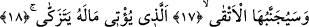
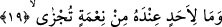

hususu “yalanlayıp yüz çeviren” sözü ile açıklamıştır.
17-18. Temizlenmek üzere malını hayra veren iyiler ondan (ateşten) uzak tutulur.
“Temizlenmek üzere” yâni Allah katında artıcı ve temizlenmiş bir mal olsun diye
malını veren, riyâ ve süm‘a arzusunda olmayan ya da günahlarından temizlenmek,
cimriliğin kirinden, malı elde tutmanın pisliğinden temize çıkmak üzere “malını veren”
onu çeşitli hayır ve hasenata harcayan “takvâ sâhipleri” küfür ve mâsiyetten
uzaklaşarak takvâda ileri giden kimseler “ondan uzak tutulurlar.” Cehennemin sesini
duymayacak şekilde ondan uzak tutulurlar. Cehennemin kenarında dolaşmak bir yana ve
orada ebediyyen kalmak üzere girmek şöyle dursun yakınına bile yaklaştırılmazlar.
Cehennemin sesini duymayacak şekilde uzaklaştırılırlar. Onları Cehennemden
uzaklaştıracak olan Allah’tır. Onlar bu ateşten çabucak uzaklaşır ve kurtulurlar.
Müttakiler dışında küfürden/inkârdan kaçınan, ancak mâsiyetlerden çekinmeyenlere
gelince bunlar tevbe etmeyen fâsık ve bedbaht mü’minlerdir. Bunlar Cehennemden
müttakîler kadar uzaklaştırılmazlar. Tam tersine -kâfirlerin tattıkları şiddette olmasa
bile- Cehenneme girip onun ateşinin tadını alırlar. Kâfirler kadar şiddetli azap
duymamaları Cehennem tabakalarından üst tabakalarda olmalarından dolayıdır. Bu
durum yukarda zikredilen mânâda ebedî Cehenneme girmelerini gerektirmez ve bu
durum yukarıda geçen sınırlama ile çelişmez.
Keşfü’l-esrâr’da der ki: “Eşkà (en kötü/bedbaht)” şakî/bedbaht mânâsına kullanıdığı
gibi “Etkà” kelimesi de “takî/iyi, takvâ sâhibi” mânâsınadır. Nitekim şâir şöyle der:
Bazı adamlar temennî ederler bana ölümü!
Ölürsem bu yolda tek ben miyim sade ölümlü!
Bu beyitte geçen “Evhad” kelimesi “vâhid” anlamınadır.
19. O, kimseye karşılık görmek için iyilik yapmaz.
Bu cümle, âyette sözü edilen kimsenin malını verirken bunu arınmak/temizlenmek ve
sırf Allah rızası için yaptığını ifâde eden bir başlangıç cümlesidir. Yani onun yanında
karşılığı verilecek ve mukabelede bulunulacak hiç kimseye âid herhangi bir nimet ve
minnet yoktur ki o bu malı verirken ondan karşılık beklesin.